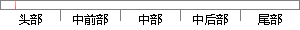

中国制造到中国智造、中国创造的
片段位置图

相似结果
相似片段：
济社会发展再上新台阶，再创新辉煌。一要把提高自主创新能力摆在更加突出的位置，加快打造西部地区创新驱动高地，为建设创新型国家，实现从“中国制造”到“中国智造”、“中国创造”的转变作出新贡献。二要以学习贯彻胡锦涛总书记“7·23”重要讲话精神为强大动力，深入挖掘抗震救灾、恢复重建宝贵财富，加强社会主义核心价值体
| 对比库： | WriteCheck云资源库 |
| 来源： | abpf.gov.cn 查看来源 |
| 发布时间： | 2012-10-10 |
| 相似率 | 100% （严重抄袭） |